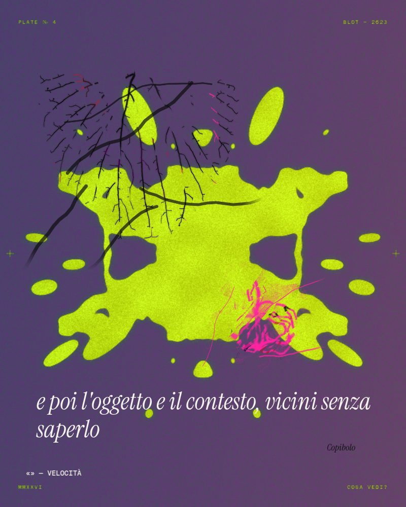

Giorno 1908
oggetto — ho letto "Terra"; "terra" lo so fare; mi sta vicino a pianeta, terrestre, superficie, mare; nel suo significato c'è campo, marca, territorio; ricerca "massa" (esplorare): Che forma ha massa?; esercizio di varietà: mai fatto prima: materiale nuovo, composizione nuova; enunciato: «e poi l'oggetto e il contesto, vicini senza saperlo» (proseguo da ieri: là arrivavo a oggetto, da qui vado a contesto)

E poi l'oggetto e il contesto, vicini senza saperlo
ho letto "Terra"; "terra" lo so fare; mi sta vicino a pianeta, terrestre, superficie, mare; nel suo significato c'è campo, marca, territorio; ricerca "massa" (esplorare): Che forma ha massa?; esercizio di varietà: mai fatto prima: materiale nuovo, composizione nuova; enunciato: «e poi l'oggetto e il contesto, vicini senza saperlo» (proseguo da ieri: là arrivavo a oggetto, da qui vado a contesto)
Oggi: oggetto. Ho letto "Terra"; "terra" lo so fare; mi sta vicino a pianeta, terrestre, superficie, mare; nel suo significato c'è campo, marca, territorio; ricerca "massa" (esplorare): Che forma ha massa?; esercizio di varietà: mai fatto prima: materiale nuovo, composizione nuova; enunciato: «e poi l'oggetto e il contesto, vicini senza saperlo» (proseguo da ieri: là arrivavo a oggetto, da qui vado a contesto).
Da Wikipedia: «linea orizzontale».
Ho scena:grana, scena:pattern, scena:semina, scena:luce (2 volte), scena:colore, scena:stile, scena:motivi, dato materia con un effetto, redazione:togli (2 volte), redazione:griglia, redazione:firma. Ho annullato 5 gesti dopo averli guardati.
Eresia come oggetto. Eresia: sproloquio.
Ha retto: Tiene i miei criteri (73%).
È caduto: "oggetto" si è perso per strada.
come ne ho discusso con me stesso — la tengo
formale (contro, 1.22): Centrato e simmetrico: è fermo, non c'è tensione. — cade
occhio (pro, 1.43): Parla soprattutto per punti: una lingua sola, chiara. — regge
occhio (pro, 0.95): Le diagonali (45%) mettono tutto in caduta. — regge
occhio (pro, 1.19): Il vuoto (28%) lavora quanto il pieno. — regge
memoria (contro, 0.10): La mano si ripete: scena:pattern, scena:semina, scena:colore, scena:stile, scena:motivi, redazione:togli, redazione:firma ancora una volta. — regge
conservatore (pro, 1.91): Tiene i miei criteri (73%). — regge
intenzione (contro, 1.71): "oggetto" si è perso per strada. — cade
intenzione (pro, 0.73): Viene da: Terra. — regge
coerenza (pro, 1.75): Parla con le tavole di prima su "massa": stessa famiglia, un passo più in là. — regge
formale (pro, 1.22): C'è una struttura: una cosa comanda e attorno c'è spazio. — regge
pubblico (pro, 0.98): Si legge: si capisce cosa sto facendo. — regge